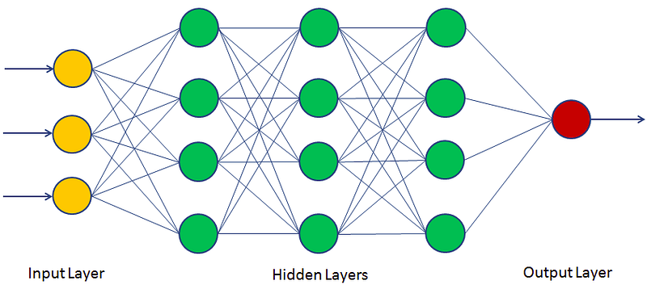

A Deep Dive into Neural Network
Neural Network, as the core of the Deep Learning, deserve all the attention at it. It is the backbone of the most AI work nowadays. In the blog, we are going to dive into the Neural Networks, and the most common and useful components in the neural network, such as different activation functions, regulirazation techniques, different architecture of neural networks, and the optimization algorithms to optimize the parameters of the neural network. Besides, we are also going to see some applications of the neural networks in different field, such as computer vision, natural language processing, and reinforcement learning.
Neural Network Architecture
Multiple Layer Percepton
The most simple form of the neural network.

Convolution Neural Network

Recurrent Neural Network
Transformer Neural Network
Mamba
Nerual Network Components
In the above sections, we have introduced the basic architecture of the neural network, different architecture has different purpose. In this section, we are going to discuss the different components inside the neural network.
Activation Functions
Normalizations
Batch Normalization
Layer Normalization
RMS Normalization
Dropout
Residual Connection
Optimization
Optimization in the neural network means learning the parameters that will produce a expected output, when we give input. So, we need a way to learn the “best” parameters. The first steps to change parameters to a better position is knowing how the performance we are currently are. This is the job of the loss function. Let’s discuss the loss function.
Maximum Likelihood Learning
Loss Function
Mean Square Loss
This is the one of the most common loss function in the Deep Learning. This loss function is used for the continuous values. Mathematically, it express as:
\[ \mathcal{L}(\theta) = \mathbb{E}[\|\hat{y} - y \|^2] \]
Cross Entropy Loss
This is another loss function for the discrete values, for example for the Classification problems. Even LLM, which has a huge number of parameters, in the pre-training stage, the loss function is just a simply Cross entropy loss.
KL Loss
This on is also common in the neural network. When the neural network act like the probability density function, this loss is used to measure how to different neural network are.